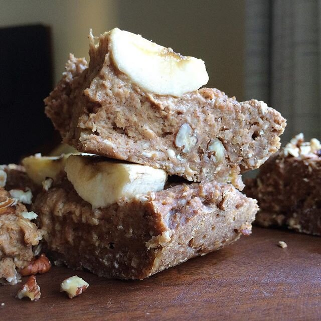

Banana Pecan Protein Cake (vegan)

Baking is my therapy. And I'm kinda obsessed with the texture of this okkayyyyy. Banana pecan protein cake! It's like banana bread, but cake? Idk it's gooood. That's all really. I've been experimenting with rice protein powder and it's preeeetty awesome.
I'm still on the fence about transitioning 100% to veganism - mostly because 1) I love whey protein & protein bars. 2) I love fish. It's hard but I'm finding awesome alternatives like rice protein so fingers crossed!! If anybody has alternatives, PLEASEEE let me know. I can't break the Quest Bar & whey protein addiction D;
Banana Pecan Protein Cake
Serves: 9
-
1 cup instant oats
-
1 cup spelt flour
-
1/4 cup rice protein powder
-
1/2 TBSP cinnamon
-
pinch of sea salt
-
2 bananas
-
1/2 cup unsweetened almond milk
-
2 TBSP cinnamon almond butter
-
1/2 cup baking stevia
-
1/4 cup chopped pecans
Just mix everything all in a bowl!! It helps if you start by mashing the bananas first - either way just make sure the bananas are mashed well. Pour the batter in an 8x8 baking dish sprayed with nonstick spray and bake at 350 F for 18-20 minutes. Cut into 9 pieces! Store extras in the fridge.